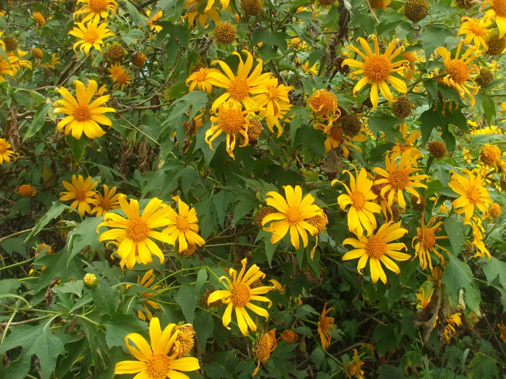
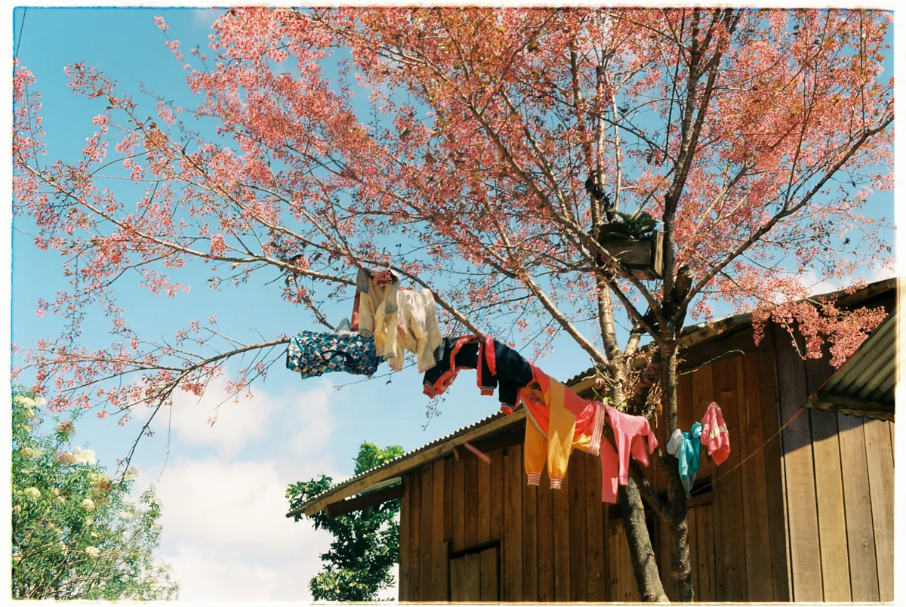
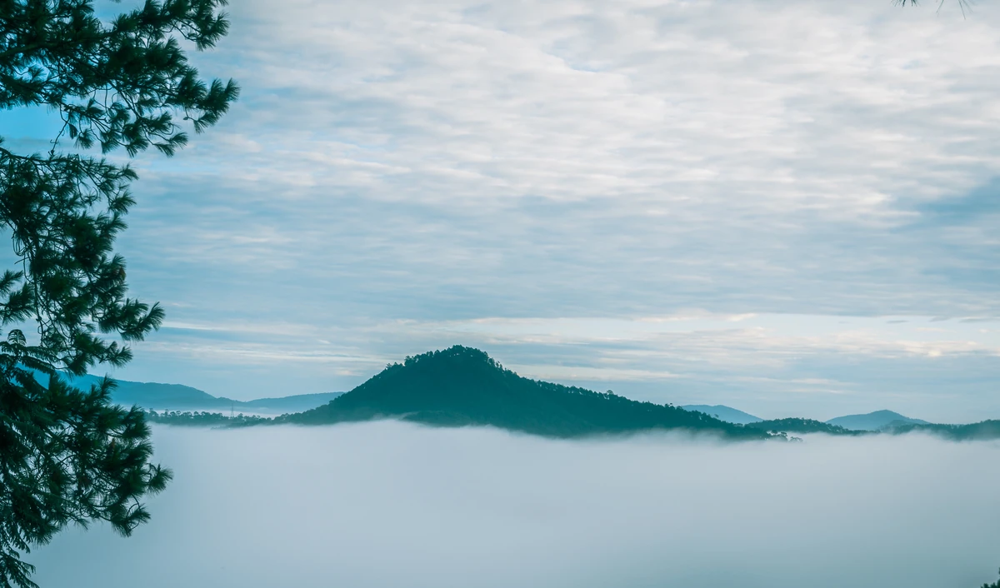

Đà Lạt đẹp quanh năm nhờ khí hậu mát mẻ (nhiệt độ trung bình các tháng khoảng 16–19°C), nhưng đẹp nhất là mùa khô từ tháng 11 đến tháng 4: trời trong, hoàng hôn rực rỡ, view rõ nét — lý tưởng để ngồi ngoài trời ăn nướng. Tại Tiệm Nướng Trạm Dừng Chill (4.8/5 sao, 7.060 lượt đánh giá trên Google Maps — số đọc ngày 04/09/2026), bạn còn ngắm được tàu lửa cổ chạy ngay dưới chân quán.
Khí hậu Đà Lạt: hai mùa, một độ cao 1.500m
Đà Lạt nằm ở độ cao khoảng 1.500m so với mực nước biển, nhiệt độ trung bình các tháng chỉ khoảng 16–19°C, ban ngày thường 21–25°C — mát mẻ kể cả giữa hè (số trung bình nhiều năm theo bảng khí hậu trên trang Wikipedia vừa dẫn). Thành phố có hai mùa rõ rệt:
- Mùa khô (tháng 11 – tháng 4): trời nắng ráo, ít mưa, hoa nở rộ. Đêm trung bình khoảng 11–14°C, lạnh nhất vào tháng 1 — rất hợp ngồi ngoài trời quanh bếp than.
- Mùa mưa (tháng 5 – tháng 10): mưa thường rơi chiều muộn rồi tạnh, sáng vẫn nắng đẹp. Sương mù phủ đồi thông, không khí lãng mạn, giá phòng rẻ hơn.
Điểm mấu chốt cho người yêu BBQ ngoài trời: vì Đà Lạt mát quanh năm nên mùa nào cũng ăn nướng được. Khác biệt nằm ở view — mùa khô trời trong thì hoàng hôn và "biển sao nhà lồng" rõ nét; mùa mưa thì sương bay huyền ảo.
Bảng tra nhanh 12 tháng: thời tiết, hoa và điểm nhấn
Bảng dưới đây giúp bạn chọn thời điểm theo sở thích — từ săn hoa, săn mây đến né đông né mưa. Nhiệt độ là trung bình cao nhất ban ngày và thấp nhất ban đêm, kèm số ngày mưa trung bình của tháng, theo bảng khí hậu Đà Lạt trên Wikipedia (nguồn của bảng: Địa chí Đà Lạt). Cột mức đông khách là quan sát của quán, không phải số thống kê.
| Tháng | Mùa | Nhiệt độ TB ngày · đêm · ngày mưa | Hoa / điểm nhấn | Mức đông khách |
|---|---|---|---|---|
| Tháng 1 | Giữa mùa khô | 22°C · 11°C · 2 ngày mưa | Đêm lạnh nhất năm, sương sớm huyền ảo; năm nào Tết Âm lịch rơi vào tháng 1 thì sau mùng 5 khách vắng hẳn | Tùy năm (vắng sau Tết) |
| Tháng 2 | Mùa khô | 24°C · 12°C · 2 ngày mưa | Mai anh đào nở rộ, Valentine | Vừa |
| Tháng 3 | Cuối mùa khô | 25°C · 13°C · 5 ngày mưa | Mai anh đào, phượng tím, mimosa, hoa ban | Khá đông (8/3) |
| Tháng 4 | Chuyển mùa, mưa tăng dần | 25°C · 14°C · 11 ngày mưa | View hoàng hôn rõ nét; lễ 30/4–1/5 | Đông dịp lễ |
| Tháng 5 | Đầu mùa mưa | 25°C · 16°C · 18 ngày mưa | Phượng tím (Jacaranda) nở rộ | Vừa |
| Tháng 6 | Giữa mùa mưa | 23°C · 16°C · 20 ngày mưa | Mưa chiều, sáng nắng; ít khách, giá rẻ | Vắng |
| Tháng 7 | Mùa mưa | 23°C · 16°C · 23 ngày mưa | Sương mù nhiều, mưa gần như cả tháng | Vừa (hè) |
| Tháng 8 | Mùa mưa | 23°C · 16°C · 22 ngày mưa | Mát mẻ, ít khách, giá rẻ | Vắng |
| Tháng 9 | Mưa nhiều nhất năm | 23°C · 16°C · 23 ngày mưa | Giao mùa, bắt đầu lá vàng, sương dày | Vắng |
| Tháng 10 | Cuối mùa mưa | 23°C · 15°C · 19 ngày mưa | Hoa dã quỳ vàng rực triền đồi | Vừa |
| Tháng 11 | Đầu mùa khô, còn mưa rải rác | 22°C · 14°C · 10 ngày mưa | View đẹp nhất năm, dã quỳ vẫn nở, cỏ hồng | Vừa |
| Tháng 12 | Giữa mùa khô | 21°C · 13°C · 5 ngày mưa | Giáng Sinh, Năm Mới, trời lạnh dần | Cao điểm |
Lưu ý: nhiệt độ và số ngày mưa trên là trung bình nhiều năm; từng năm, từng tuần có thể lệch khá xa, nên xem dự báo trước ngày đi.
Mùa khô (tháng 11 – tháng 4): thời điểm vàng
Đây là mùa đẹp nhất. Trời khô ráo nên hoàng hôn rực rỡ, "biển sao nhà lồng" sáng rõ từng ngọn đèn, và đường ray tàu lửa cổ phía dưới hiện rõ trong nắng chiều. Một vài lát cắt đáng nhớ trong mùa khô:
Tháng 11 — bí mật của dân du lịch
Tháng 11 là đầu mùa khô, thường được xem là view đẹp nhất năm: trời trong không gợn mây, nhiệt độ thấp nhất ban đêm trung bình khoảng 14°C — mát mà không lạnh quá để ngồi ngoài trời. Dã quỳ vẫn còn nở, lại chưa đông như tháng 12.

Đi đâu ngắm dã quỳ: cung Trại Mát – Cầu Đất – D'ran
Tháng 11 lên Đà Lạt mà chỉ loanh quanh nội ô thì hơi phí. Báo Tuổi Trẻ (bài ngày 7/11/2023) viết nội ô cũng có những trảng dã quỳ lớn, nhưng phải ra vùng ngoại ô như Trại Mát, Cầu Đất mới gặp "đại cảnh hoa dã quỳ bất tận". VnExpress (bài ngày 24/9/2022) xếp cung Trại Mát – Cầu Đất là "cung có hoa nở đẹp nhất ở Đà Lạt", ghi cung này cách trung tâm khoảng 30 km, và nói thêm đèo D'ran, chân đập Đa Nhim cũng là nơi dễ ngắm hoa.
Nói ra để bạn tiện sắp lịch: Trạm Dừng Chill nằm ở Trại Mát — cái tên mở đầu cung đường đó — cách trung tâm khoảng 7 km. Sáng bạn chạy đi ngắm hoa, chiều quay về theo đường cũ là ngang ngay cửa quán, khỏi phải vòng vào phố rồi lại đi ra. Quán mở từ 15:00 nên về tới nơi tầm chiều vẫn kịp ngồi ngắm hoàng hôn trước khi trời tối.
Một điều phải nói thật: dã quỳ nở lệch theo từng năm, đến hai tờ báo lớn cũng ghi khác nhau — Tuổi Trẻ ghi mùa hoa "cuối tháng 10 đến cuối tháng 11", VnExpress lại ghi "cuối tháng 9 đến hết tháng 10". Nói gọn là cứ nhắm khoảng tháng 10–11, còn ngày cụ thể thì không ai chốt được. Nếu bạn canh đi đúng mùa hoa, trước khi khởi hành nên xem ảnh người ta mới chụp trong tháng đó cho chắc, đừng tin lịch cũ.
Tháng 12 — Giáng Sinh lung linh
Đêm trung bình khoảng 13°C và còn lạnh hơn sang tháng 1, Đà Lạt lên đèn Giáng Sinh khắp phố. Đây là mùa cao điểm nên cần đặt bàn, đặt phòng trước. Nướng BBQ ngoài trời 14°C, ngắm trời đông đầy sao — một bữa tiệc Noel khó quên.
Tháng 1–2 — đêm lạnh nhất năm, mai anh đào và giá tốt sau Tết
Tết Âm lịch rơi vào cuối tháng 1 hoặc tháng 2 tùy năm (Tết 2027 là ngày 6/2); từ khoảng mùng 5–6 Tết, khách giảm mạnh, quán vắng nên bạn thoải mái chọn bàn đẹp nhất. Sang tháng 2, mai anh đào nở rộ dọc đường Trần Hưng Đạo, ven hồ Xuân Hương — thời điểm thông minh: hoa đẹp, ít đông.

Tháng 3–4 — mùa hoa xuân, cuối mùa khô
Tháng 3 là thiên đường hoa (mai anh đào, phượng tím, mimosa, hoa ban). Tháng 4 cuối mùa khô, trời trong nên view hoàng hôn và nhà lồng siêu nét. Lưu ý đặt trước cho các dịp 8/3 và 30/4–1/5.
Mùa mưa (tháng 5 – tháng 10): rẻ, vắng và huyền ảo
Đừng vội gạch mùa mưa. Mưa Đà Lạt thường rơi chiều muộn rồi tạnh, để lại không khí trong lành và sương bay qua thung lũng — một vẻ đẹp riêng:

- Tháng 5: đầu mùa mưa, hoa phượng tím nở rộ trên đường Trần Phú, Hùng Vương.
- Tháng 6 và tháng 8: ít khách, giá phòng rẻ hơn, được phục vụ chu đáo hơn vì quán không quá tải.
- Tháng 7–9: sương mù dày, đèn nhà lồng xuyên sương tạo hiệu ứng "đèn trong mây"; tháng 9–10 chớm có lá vàng.
- Tháng 10: cuối mùa mưa nhưng vẫn mưa nhiều (trung bình khoảng 19 ngày mưa), hoa dã quỳ bắt đầu vàng triền đồi.
Mẹo mùa mưa: mang theo áo mưa, ô; ưu tiên hoạt động trong nhà buổi chiều; tận hưởng ngoài trời vào buổi sáng và tối sau khi mưa tạnh.
Mùa nào ăn nướng ngắm tàu lửa hợp nhất?
Điểm đặc biệt của Trạm Dừng Chill là tuyến tàu lửa cổ Đà Lạt – Trại Mát (đoạn dài khoảng 7 km còn chạy tàu du lịch, thuộc tuyến đường sắt do Pháp xây) chạy ngay dưới chân quán. Vừa nướng, bạn vừa nghe còi tàu và ngắm đoàn tàu lăn bánh. Để "săn" được tàu, hãy canh theo khung giờ tàu chạy qua quán dưới đây:
Tàu lửa cổ tuyến Đà Lạt – Trại Mát chạy qua quán trong khung 16:30 – 21:25.
Khung vàng: có mặt khoảng 16:00 là kịp tàu từ lúc bắt đầu chạy qua quán (16:30), rồi ngồi lại ngắm hoàng hôn. Lưu ý khung 17:30–19:00 quán thường kín khách và không nhận đặt bàn mới — bạn nên chọn sớm hơn hoặc từ 19:30. Chi tiết lịch tàu lửa Đà Lạt – Trại Mát qua quán xem thêm ở trang riêng.
Trạm Dừng Chill so với các kiểu quán nướng khác ở Đà Lạt
Ở Đà Lạt có nhiều kiểu quán nướng để bạn chọn theo nhu cầu — đây là cách Trạm Dừng Chill khác biệt theo từng loại hình (mô tả mang tính tham khảo, không nêu tên quán cụ thể):
- So với quán nướng trong trung tâm: nhiều quán nướng ở trung tâm phục vụ trong nhà, tiện đi lại; Trạm Dừng Chill nằm ngoài trời với "3 trong 1" — tàu lửa cổ + hoàng hôn thung lũng + biển sao nhà lồng.
- Trải nghiệm theo mùa: điểm nhấn của Trạm Dừng Chill thay đổi theo thời tiết — mùa khô view trong, mùa mưa sương huyền ảo — trong khi quán trong nhà ít chịu ảnh hưởng của thời tiết.
- Món & giá: món signature là Bò Kobe Nướng Tảng Phô Mai Trứng Muối (209K); giá minh bạch 95.000đ–300.000đ/người, kèm setup sinh nhật / kỷ niệm miễn phí.
- Đánh giá: 4.8/5 trên Google với hơn 7.060 lượt.
Vài món gợi ý theo tiết trời lạnh Đà Lạt: Lẩu Gà Lá É (300K) hoặc Lẩu Cá Tầm (320K) để ấm bụng; nhóm best seller có Ba Chỉ Bò Cuộn Kim Châm (137K), Ba Chỉ Bò Nướng Muối Tiêu (155K) và Sườn Cay Thái Lan (260K). Xem đầy đủ tại thực đơn.
Đi mùa nào thì nên chuẩn bị gì?
Mùa khô cần đồ giữ ấm, mùa mưa cần đồ che mưa và đi sớm. Tháng 12–2 sau 20:00 nhiệt độ có thể xuống 13–15°C nên phải có áo khoác dày và khăn quàng; tháng 5–10 thì mang ô hoặc áo mưa và nên tới quán từ 15:00 để còn ngồi ngoài trời lúc trời khô.
- Mùa khô (đặc biệt tháng 12–2): mang áo khoác dày, khăn quàng vì sau 20:00 nhiệt độ có thể xuống 13–15°C. Ngồi cạnh bếp than nướng cũng đủ ấm.
- Mùa mưa (tháng 5–10): mang ô/áo mưa, đến quán từ 15:00 để ngồi ngoài trời lúc trời còn khô; mưa chiều ập tới thì chuyển vào khu mái che, vẫn nhìn ra thung lũng.
- Dịp lễ Tết, Giáng Sinh, 30/4, Valentine: đặt bàn trước ít nhất vài ngày; cao điểm nên đặt sớm hơn.
Nếu đi dịp đặc biệt, tham khảo thêm các gói trải nghiệm: setup sinh nhật hay hẹn hò, cầu hôn với view thung lũng lên đèn.
Kết: chọn mùa theo điều bạn muốn
Muốn view trong veo và hoàng hôn rực rỡ — chọn tháng 11 đến tháng 4. Muốn vắng, rẻ và sương mù lãng mạn — chọn tháng 6, tháng 8 hoặc tháng 9 (tháng 7 trùng hè nên đông vừa). Muốn săn hoa — canh mai anh đào (khoảng tháng 2–3), phượng tím (khoảng tháng 3–5), dã quỳ (khoảng tháng 10–11); ngày nở lệch theo từng năm. Dù bạn chọn mùa nào, một bàn nướng ấm bên thung lũng đèn vẫn luôn sẵn sàng. Quán mở 15:00–23:00 hằng ngày tại 111 Huỳnh Tấn Phát, Phường Xuân Trường, Đà Lạt. Hẹn gặp bạn — đặt bàn tại đây hoặc gọi/Zalo 0989.765.070, xác nhận trong khoảng 15 phút (trong giờ mở cửa). Trên cùng đoạn đường còn Tiệm Nướng & Chill Xóm Lèo (quán cùng chủ với Trạm Dừng Chill) ở số 113 — thêm một chỗ ngắm tàu để bạn cân nhắc.
Câu hỏi thường gặp
Đà Lạt mùa nào đẹp nhất để đi du lịch?
Mùa khô từ tháng 11 đến tháng 4 là đẹp nhất: trời trong, ít mưa, hoàng hôn rực rỡ và view rõ nét. Riêng tháng 11 (đầu mùa khô) thường được xem là view đẹp nhất năm mà chưa quá đông khách.
Đi Đà Lạt mùa mưa (tháng 5–10) có chán không?
Không. Mưa thường rơi chiều muộn rồi tạnh, sáng vẫn nắng đẹp. Mùa mưa ít khách, giá phòng rẻ hơn, lại có sương mù huyền ảo. Buổi tối sau mưa, nướng BBQ ngắm nhà lồng lên đèn trong sương rất chill.
Tháng mấy ở Đà Lạt vắng khách và giá rẻ nhất?
Khoảng tháng 6, 8 và 9 (tháng 7 trùng hè nên đông hơn) và quãng sau Tết Âm lịch (từ mùng 5–6; Tết rơi vào cuối tháng 1 hoặc tháng 2 tùy năm) là vắng và giá tốt. Quán không quá tải nên bạn được phục vụ chu đáo và thoải mái chọn bàn đẹp.
Đến Trạm Dừng Chill giờ nào để vừa ngắm hoàng hôn vừa thấy tàu lửa?
Có mặt khoảng 16:00 để đón tàu từ lúc bắt đầu chạy qua quán (16:30), rồi ngồi lại ngắm hoàng hôn. Xem thêm ở trang săn tàu Đà Lạt.
Đi Đà Lạt nên mặc gì khi ăn nướng ngoài trời buổi tối?
Mùa khô (nhất là tháng 12–2) nên mang áo khoác dày và khăn quàng vì sau 20:00 nhiệt độ xuống khoảng 13–15°C. Ngồi cạnh bếp than nướng cũng đủ ấm. Mùa mưa thì mang thêm ô hoặc áo mưa.
Đi dịp lễ, Tết, Giáng Sinh có cần đặt bàn trước không?
Có. Các dịp cao điểm như Giáng Sinh, Tết, 30/4 và cuối tuần quán rất đông, nên đặt bàn trước qua form trên website hoặc Zalo 0989.765.070. Khung 17:30–19:00 thường kín khách.
Quán có chỗ đỗ ô tô không?
Trạm Dừng Chill có bãi đỗ miễn phí cho cả xe máy và ô tô con ngay tại quán. Quán ở 111 Huỳnh Tấn Phát, Phường Xuân Trường, cách trung tâm Đà Lạt khoảng 7 km, đi xe khoảng 20 phút theo hướng Trại Mát. Giờ cao điểm cuối tuần có thể phải đỗ xa hơn khoảng 100–200m. Quán mở từ 15:00 nên đến sớm sẽ đỗ dễ hơn; Grab và taxi vào được tận nơi.